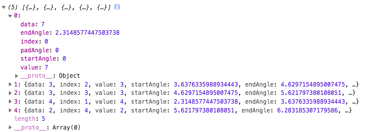

几个重要的概念
下面说明绘图过程中比较常用的相关知识。
比例尺
通俗的理解比例尺就是一个映射关系（比如你要绘制一个折线图，实际数值是0-10000，绘制的图形高度是0-400，实际数据就需要通过比例尺转换成绘制时的高度），D3.js提供的比例尺很多，大致可以分为定量比例尺（连续的定义域）和序数比例尺（定义域不连续）。
var ordinal = d3.scaleOrdinal()
.domain([0, 1, 2, 3, 4])
.range(["red", "blue", "green", "yellow", "black"]);
//打印结果：red blue green yellow black
console.log(ordinal(0), ordinal(1), ordinal(2), ordinal(3), ordinal(4));
d3.scaleOrdinal()方法是获取
序数比例尺，其中domain和range方便传入定义域和值域，最后返回一个获取转换后数据的函数。
布局
从字面上来看，就是把数据改造成适合绘制目标视图（希望展示的图形）的结构。D3.js提供的布局种类很多，通过这些布局将某种数据转换成另一种利于可视化的数据总是有益的。
比如你希望画一个饼状图，给你的数据是一个数组[ 7 , 3 , 3 , 4 , 2 ]，转变成弧度更容易绘制：
//获取饼状布局方法
var pie = d3.pie();
//把数据转换成绘制饼状图需要的弧度
var piedata = pie([ 7 , 3 , 3 , 4 , 2 ]);
console.log(piedata);
打印结果：

计算出来的数据标记了开始和结束的弧度，很方便画饼状图。